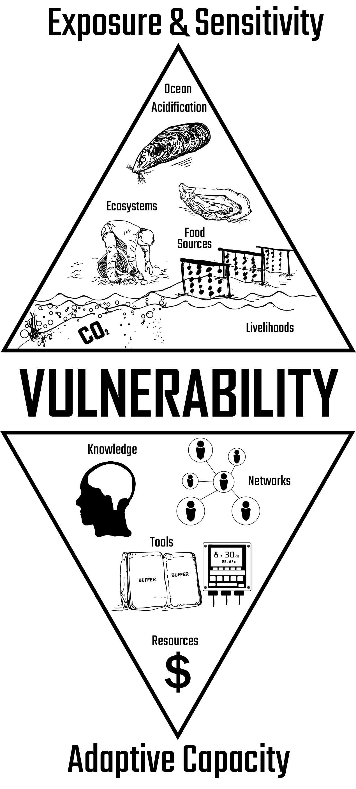

The Story of Snow's Swan Song
Exposure, Sensitivity, and Adaptive Capacity of the Oregon Snow Industry
What's Going On?
Vulnerability to climate induced snow melt is affected by three major factors: 1) Shorter winter seasons, 2) Higher precipitation levels, and 3) Lower freezing temperatures.
These factors are discussed in the next sections, but the important thing to note here is their relationship to vulnerability.
Vulnerability increases when exposure & sensitivity increase:
↑ Hazard = ↑ Vulnerability
Vulnerability decreases when adaptive capacity increases:
↑ Actions = ↓ Vulnerability
Illustration: Ginny Katz
Who's Involved? Who's Affected?
Presipitation/Temperature Data
Select a year range:(Explain the rising concern over shrinking snowpacks due to a rise in precipitation and a decrease in freezing temperatures.)
(Emphasize that with warmer summer conditions, snowpacks around Oregon and around the world have taken a massive hit and as a result are slowly shrinking away.)

(Find a neat image of a mountain community displaying a past and present picture of their snowpack to display these concerns...) Waldbusser, et al. 2013
(Go into further detail on what's causing warmer winters overall!)2 water up to the coastal shelf from deep ocean currents.
(Emphasize the shrinking snowpack & it's impact on local snow attractions, tourism, and natural beauty.)
Where is this Happening?
(Rattle off a list of regions and locations in Oregon that are taking a direct hit to shrinking winter seasons!)

A vast network of people rely on snowpack for their livelihoods, resources, and for entertainment including: (List all affected groups)
(Show any interesting patterns in the data for these locations and explain what makes these areas vulnerable to climate changed induced snowmelt.)
How is Adaptation taking place?
Adaptive capacity is the ability to marshall knowledge, tools, resources, and networks to avoid or reduce harmful consequences resulting from a hazard.

(Explain how the snow industry is changing/adapting to climate change induced snowmelt)
(Go into detail on several specific pieces of technology or methods certain areas are using)
Combined Vulnerability
(Add any comments from those working in the snow industry.)

(Add any comments from those who are not in the snow industry but love the snow)


About this story map
Overview
This story map describes how vulnerability is conceptualized for Pacific Northwest shellfisheries adapting to ocean acidification.
Author: Brian G. Katz
College of Earth, Ocean, and Atmospheric Sciences | Oregon State University | 2020
Screenshots are open for use with the following citation:
Katz, B. (2020). Vulnerability and adaptation of Pacific Northwest shellfisheries to ocean acidification [Master's thesis, Oregon State University]. Oregon State University.
Special thanks to Ginny Katz for illustrations and video editing.